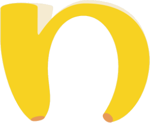

anafeedOpen nanafeed → Profile → Settings (gear icon) → Delete account → confirm. Your account, posts, photos, ratings, comments, stickers, follows and saved items are deleted immediately and cannot be restored.
If you can no longer sign in, send a request from the email address linked to your account to maksym@bananiv.com with the subject “Delete my nanafeed account”. We delete the account within 30 days and confirm by email.
Anonymised, aggregated statistics (for example the average price of a brand in a chain) that no longer identify you. Server logs are kept for up to 30 days for security. See our Privacy Policy.